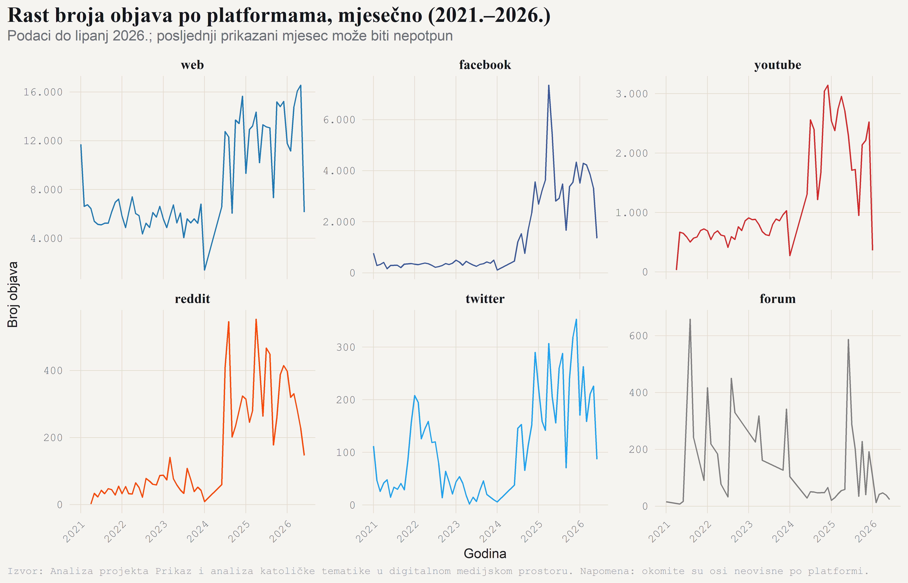
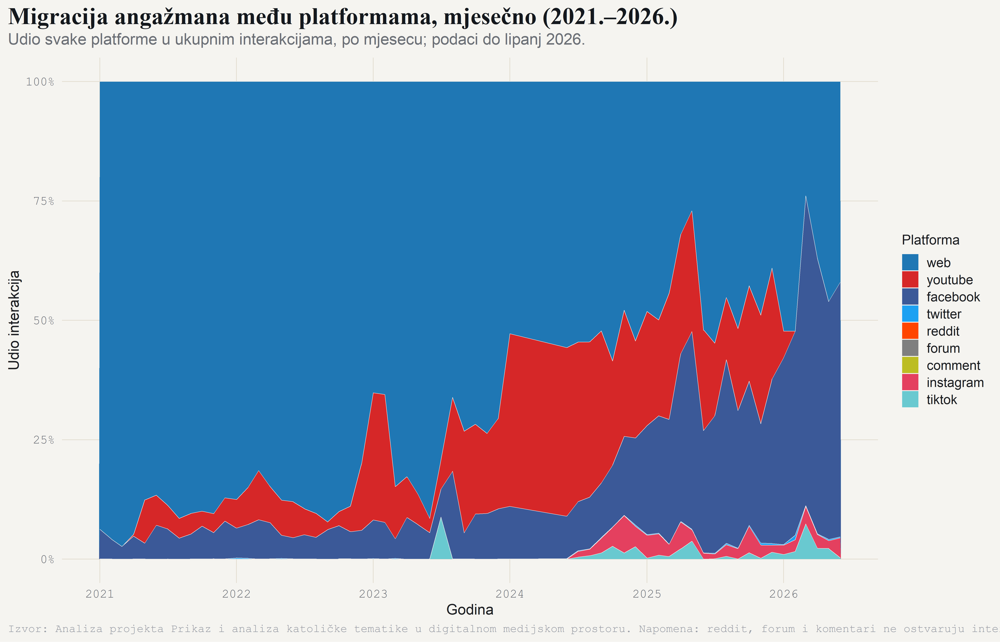
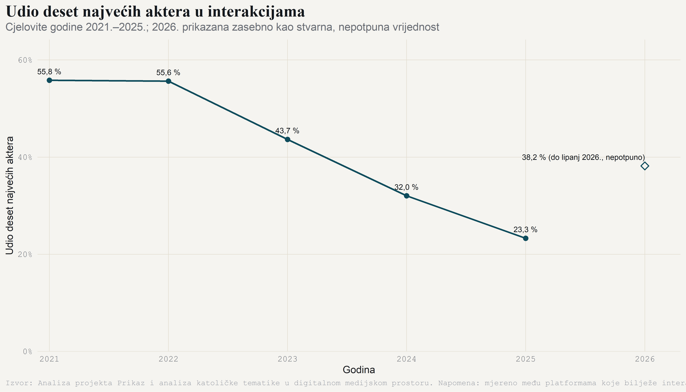
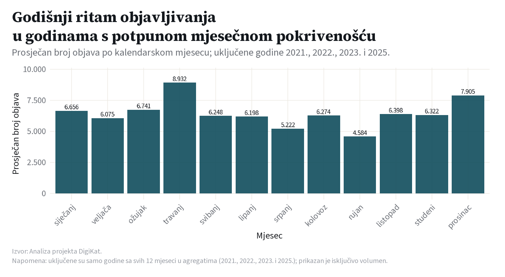

Evolucija ekosustava — digitalni prostor kroz vrijeme (2021.–2026.)
Rast, migracija utjecaja i širenje kruga aktera
Evolucija ekosustava
Trendovi
Koncentracija
Uvod u vremensku dinamiku ekosustava
Prethodne su mape opisale aktere i platforme, Tematske struje, Atmosferu diskursa te Fokus na događaje. Ova peta analitička mapa, Evolucija ekosustava, bavi se pitanjem koje ostale ostavljaju po strani, a to je kako se katolički digitalni prostor mijenja kroz vrijeme. Dok Mapa ekosustava daje presjek u pojedinoj godini, ova mapa prati njegovu putanju kroz razdoblje 2021.–2026., odnosno rast volumena, premještanje angažmana među platformama i raspodjelu utjecaja među akterima. Analiza obuhvaća isti korpus od 710.307 objava koje u njega ulaze uz najmanje dva podudaranja religijskih pojmova.
Ova je mapa namjerno strukturna, a ne sadržajna. Ona broji objave, uspoređuje udjele i mjeri raspodjelu utjecaja, ali ne analizira tonalitet, emocije ni pojedine događaje. Sadržajnom dinamikom oko konkretnih događaja bavi se Fokus na događaje. Ovdje je riječ o obliku ekosustava, a ne o njegovu značenju.
Mapu vode tri pitanja. Prvo je raste li prostor i tko ga pokreće, na što odgovaraju ukupan volumen objava i putanja svake platforme kroz godine. Drugo je kamo se premješta angažman, vidljivo iz udjela platformi u ukupnim interakcijama i njegove promjene kroz vrijeme. Treće je skuplja li se utjecaj na vrhu ili se širi, odnosno koliki dio angažmana drži nekolicina najvećih aktera i mijenja li se to iz godine u godinu.
×2,6
Rast volumena (2021.–2025.)
×2,9
Rast broja aktivnih aktera (2021.–2025.)
23,3 %
Udio deset najvećih aktera (2025.)
2021.–2026.
Razdoblje analize
NoteKako čitati ovu mapu
Sve su brojke unaprijed izračunate iz agregiranih podataka, a ne iz sirovog korpusa pri izradi prikaza. Pod volumenom podrazumijevamo broj objava koje ulaze u korpus, dakle isječak, a ne cjelokupni hrvatski medijski prostor. Angažman su ukupne interakcije. Bilježe ih web, YouTube, Facebook, Instagram, TikTok i Twitter, dok reddit, forum i komentari ne ostvaruju interakcije pa im je udio nula i ne utječu na omjer. Budući da se interakcije različito broje po platformama, primjerice komentar na webu, oznaka na YouTubeu ili reakcija na Facebooku, udjeli angažmana među platformama okvirni su i nisu izravno usporedivi. Raspodjelu utjecaja mjerimo među akterima označenima izvorom objave. Isti se brend na različitim platformama broji zasebno, a akter može biti i pojedinačni račun, a ne samo medijski brend, pa i taj pokazatelj treba čitati kao okvirnu naznaku. Godina 2026. nepotpuna je, s podacima do lipanj 2026.. Prikazi rasta i migracije angažmana mjesečni su, pa uključuju stvarne podatke do tog mjeseca bez posebnog isticanja. Raspodjela utjecaja među akterima ostaje na razini cjelovitih godina, a 2026. je ondje prikazana zasebno, kao stvarna, ali nepotpuna vrijednost koja se ne uspoređuje izravno s prethodnim godinama.
WarningPromjena metode prikupljanja (oko 2024.) — oprez pri čitanju rasta i raspodjele
Korpus objedinjuje dva vremenski odvojena toka prikupljanja (data_source): kontinuirani medijski monitoring (pretežno 2021.–2024.) i naknadno religijsko filtriranje (2024.–2026.). Ta promjena metode oko 2024. bitno povećava obuhvat korpusa, pa znatan dio ovdje prikazanog rasta volumena i širenja kruga aktera nije nužno stvaran, nego posljedica šireg zahvata prikupljanja. Više prikupljenih objava mehanički unosi i više različitih aktera, čime se udio deset najvećih smanjuje neovisno o stvarnoj seobi pažnje. Instagram i TikTok u korpus ulaze tek od 2024. Nalaze ove mape stoga treba čitati kao okvirne naznake putanje, a ne kao precizne mjere stvarne promjene, i uvijek uvjetovano tokom prikupljanja.
Rast ekosustava kroz vrijeme
Prvi je pogled na puki opseg. Ako se katolička tematika u digitalnom prostoru širi, to bi se trebalo vidjeti kao rast broja objava, i po ekosustavu u cjelini i po pojedinim platformama koje ga čine.
Ekosustav je u promatranom razdoblju osjetno narastao. Prikaz je mjesečan kako bi u njega ušli stvarni, dosad prikupljeni podaci za 2026. godinu, umjesto procjene za cijelu godinu. Ukupan je broj objava u korpusu porastao s 90.388 u 2021. na 236.166 u 2025. godini, dakle oko 2,6 puta. Dobar dio tog porasta, međutim, valja pripisati promjeni metode prikupljanja opisanoj iznad, a ne nužno stvarnom širenju katoličke tematike u medijima. Taj rast nije jednolik po platformama. Web ostaje najveći proizvođač sadržaja u apsolutnom iznosu, dok video i društvene platforme poput YouTubea, Facebooka te kasnije Instagrama i TikToka rastu brže, ali s niže osnovice. Dio tog bržeg rasta odražava i kasniji ulazak tih platformi u obuhvat prikupljanja, vidljiv na malim prikazima kao kasni početak njihovih krivulja, a ne isključivo stvarni porast objavljivanja.
Migracija angažmana među platformama
Volumen govori tko najviše objavljuje, ali ne i tko privlači najviše pažnje. Sljedeći prikaz prati kako se udio u ukupnim interakcijama raspoređuje među platformama i kako se taj raspored mijenja kroz vrijeme.

Web proizvodi najviše sadržaja, ali ne zadržava jednak udio pažnje. Prikaz je, kao i prethodni, mjesečan pa uključuje stvarne podatke do lipanj 2026.. Udio weba u ukupnim interakcijama opada s 91,6 % u 2021. na 43,8 % u 2025. godini, dok video i društvene platforme preuzimaju sve veći dio angažmana. Dio tog pomaka valja čitati oprezno. Instagram i TikTok ulaze u korpus tek 2024. godine, a Facebook u 2021. kreće s vrlo niske osnovice, pa premještanje udjela dijelom odražava širenje obuhvata prikupljanja, a ne samo stvarnu seobu publike. Uz taj oprez, smjer se ipak naslućuje i podudara se s asimetrijom već uočenom u Mapi ekosustava. Proizvodnja i pažnja ne teku istim kanalima jednakom snagom. Doseg, odnosno procijenjeni potencijalni doseg, ovdje nije glavna mjera jer je gotovo u cijelosti koncentriran na web, YouTube i Facebook, a za dio platformi uopće nije dostupan. Interakcije su pouzdaniji pokazatelj ostvarene pažnje.
Raspodjela utjecaja među akterima
Treće pitanje tiče se raspodjele moći. U svakom medijskom prostoru dio aktera privlači nesrazmjerno velik dio pažnje. Sljedeći prikaz mjeri koliki udio svih interakcija u pojedinoj godini drži samo deset najvećih aktera te kreće li se ta raspodjela prema koncentraciji ili prema širenju. Ovaj pokazatelj ostaje na razini cjelovitih godina jer podaci o pojedinačnim akterima nisu dostupni u mjesečnoj razlučivosti. Godina 2026. stoga je prikazana zasebno, kao stvarna, ali nepotpuna vrijednost.

Vrh drži sve manji dio pažnje, pa se prostor širi umjesto da se sužava. U 2021. je deset najvećih aktera držalo 55,8 % svih interakcija, a do 2025. taj je udio pao na 23,3 %, dakle više se nego prepolovio. Istodobno je broj aktivnih aktera porastao s 2.062 na 6.014, odnosno oko 2,9 puta. Drugim riječima, koncentracija se kroz razdoblje osjetno smanjuje, a pažnja se raspoređuje na sve širi krug glasova. Ni sam vrh nije nepromjenjiv. Od deset najvećih aktera u 2025. njih 5 nije bilo među deset najvećih u 2021., što upućuje na znatnu promjenjivost na vrhu. Pokazatelj ipak treba čitati okvirno. Najveći se dio pada koncentracije vremenski poklapa s proširenjem korpusa oko 2024.: veći obuhvat mehanički unosi više različitih aktera i time snižava udio najvećih, neovisno o stvarnoj seobi pažnje. Raspodjela se mjeri među platformama na kojima se interakcije različito broje, a akter je oznaka izvora, pa se isti brend na više platformi broji zasebno. Precizniju koncentraciju unutar pojedine platforme donijet će buduća dopuna ove mape. Do lipanj 2026. udio deset najvećih aktera u 2026. godini iznosio je 38,2 %. Riječ je o stvarnoj vrijednosti koja se ne uspoređuje izravno s cjelovitim godinama.
Godišnji ritam objavljivanja
Osim dugoročnog rasta, ekosustav ima i kratkoročni, ponavljajući puls. Katolička je tematika vezana uz liturgijsku godinu, pa je razumno očekivati da volumen objava nije ravnomjeran kroz mjesece. Sljedeći prikaz usrednjuje broj objava po kalendarskom mjesecu preko potpunih godina kako bi izdvojio taj ponavljajući obrazac.

Objavljivanje prati godišnji ritam. Volumen nije ravnomjeran kroz godinu, pa u prosjeku najviše objava bilježi prosinac, a najmanje rujan. Riječ je o strukturnom, kalendarskom pulsu u skladu s ritmom liturgijske godine, a ne o pojedinačnim događajima. Ovdje se namjerno prikazuje isključivo volumen. Sadržajnu dinamiku oko konkretnih događaja i blagdanskih vrhunaca, odnosno ono što se tada govori i kojim tonom, donosi Fokus na događaje.
Sinteza nalaza
Promatran kroz vrijeme, katolički digitalni prostor pokazuje tri strukturne promjene. Narastao je, angažman mu migrira prema video i društvenim platformama, a krug glasova se širi jer se utjecaj raspoređuje na sve više aktera.
Sve tri promjene valja čitati kao okvirne naznake putanje: dio rasta volumena i širenja kruga aktera odražava promjenu metode prikupljanja oko 2024. (vidi napomenu na početku mape), a ne isključivo stvarnu promjenu u medijskom prostoru.
Prostor je narastao. Ukupan volumen objava porastao je oko 2,6 puta između 2021. i 2025., pri čemu web ostaje apsolutni predvodnik, a video i društvene platforme rastu brže s niže osnovice.
Angažman migrira. Udio weba u interakcijama opada, dok YouTube i Facebook preuzimaju sve veći dio pažnje, pa se proizvodnja sadržaja i njegov odjek sve jasnije razilaze. Dio tog pomaka nose i platforme koje kasnije ulaze u korpus.
Utjecaj se raspršuje. Udio deset najvećih aktera pao je s 55,8 % na 23,3 %, a broj aktivnih aktera porastao je oko 2,9 puta, pa prostor postaje raznolikiji, a ne koncentriraniji.
Ova mapa opisuje oblik ekosustava i njegovu promjenu, ali ne i njegov sadržaj. Za ono o čemu se u tim objavama govori i kako, odnosno koje teme prevladavaju i kakav je tonalitet, valja se vratiti na Tematske struje i Atmosferu diskursa. Dinamikom oko konkretnih događaja bavi se Fokus na događaje. Zajedno, pet mapa daju i presjek i putanju istog digitalnog prostora.